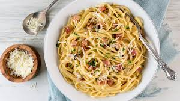
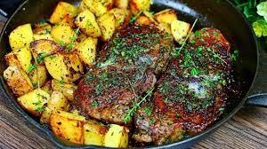
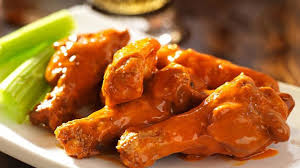

| FOOD RECIPE |
Food |
The Ingredient |
The Preparation |
|  |
- Salt
- 2 large eggs and 2 large yolks, room temperature
- 1 ounce (about 1/3 packed cup) grated pecorino Romano,
plus additional for serving
- 1 ounce (about 1/3 packed cup) grated Parmesan
- Coarsely ground black pepper
- 1 tablespoon olive oil
- 3 1/2 ounces of slab guanciale,pancetta or chicken,sliced
into pieces about 1/4 inch thick by 1/3 inch square
- 12 ounces spaghetti (about 3/4 box)
|
- Place a large pot of lightly salted water (no more than 1 tablespoon salt) over high heat,
and bring to a boil. Fill a large bowl with hot water for serving, and set aside
- In a mixing bowl, whisk together the eggs, yolks and pecorino and Parmesan.
Season with a pinch of salt and generous black pepper.
- Set the water to boil. Meanwhile, heat oil in a large skillet over medium heat,
add the chicken, on the edge of crispness but not hard.
Remove from heat and set aside.
- Add pasta to the water and boil until a bit firmer than al dente.
Just before pasta is ready, reheat guanciale in skillet, if needed.
Reserve 1 cup of pasta water, then drain pasta and add to the skillet over low heat.
- Empty serving bowl of hot water. Dry it and add hot pasta mixture. Stir in cheese mixture,
adding some reserved pasta water if needed for creaminess. Serve immediately,
dressing it with a bit of additional grated pecorino and pepper.
|
|  |
- 1 tablespoon olive oil
- 1 tablespoon butter
- 1 pound yukon gold potatoes sliced about 1/2 inch in thickness
- 3 garlic cloves minced
- 1 teaspoon thyme chopped
- 1 teaspoon rosemary chopped
- 1 teaspoon oregano chopped
- 2 lean New York Steak strip steaks
- salt and pepper
- 1/4 cup softened butter
- 3 garlic cloves minced
- 1 teaspoon thyme chopped
- 1 teaspoon rosemary chopped
- 1 teaspoon oregano chopped
|
- In a large cast iron skillet over medium high heat, add olive oil and butter, potatoes,
garlic, thyme, rosemary and oregano. Cook for about 3 minutes, stir and cook and additional
3 minutes or until fork tender. Remove and set on a plate.
- Turn the skillet to high heat. Add the steaks. Cook on each side for 3 minutes or until outside
is browned. Reduce heat to medium high. Cook the steaks to desired doneness. Mine took about 10
minutes flipping 3 times to get a medium well.
- Right before the steaks are done, make the garlic butter compound. Mix the butter, garlic and fresh
chopped herbs. Slather on top of steaks. Add the potatoes back to the pan and heat through and let the
butter melt into the steaks.
|
|  |
- 3 pounds of chicken wings
- 1/3 cup relatively mild hot sauce
- 4 tablespoons melted butter
- 1 tablespoon sherry vinegar or white vinegar
- 1 tablespoon minced garlic
- salt and pepper
|
- Cut 3 pounds of chicken wings into 3 sections; save the wing tips for stock.
Toss the wings with a little neutral oil to keep them from sticking.
- Heat a charcoal or gas grill; the fire should be moderately hot and the rack 4 to 6 inches from the heat.
Leave one side of the grill cooler for indirect cooking.
- Put the wings on the cool side of the grill. Cover the grill and cook, checking and turning once or twice,
until most of the fat has been rendered and the wings are cooked through, 15 to 20 minutes.
- When the wings are cooked, add them to the bowl with the sauce, and toss to coat. Now put the wings on the
hot part of the grill and cook, uncovered, turning as necessary, until they’re nicely browned on both sides.
(Or return to the broiler for a few minutes.)
|